Sustitución del colector de admisión
Herramientas especiales
| • | CH-807 Tapones de cierre |
| • | EN-6015 Tapones de cierre |
| • | EN-34730-91 Comprobador de la presión de combustible |
Si desea informarse sobre herramientas regionales equivalentes, consultar Herramientas especiales .
Procedimiento de desmontaje
Advertencia: La gasolina o los vapores de gasolina son muy inflamables. Puede producirse un incendio si existe una fuente de chispa. Nunca vacíe o almacene gasolina o combustible diesel en un recipiente abierto debido al riesgo de explosión o incendio. Disponga de un extintor de incendios químico seco (clase B) en las proximidades.
Advertencia: Cuando manipule combustible, lleve siempre gafas protectoras para proteger sus ojos de posibles salpicaduras.
- Abra el capó.
- Desconecte el cable negativo de la batería. Consultar Desconexión y conexión del cable negativo de la batería .
- Desmonte la cubierta del orificio del panel de extensión superior del salpicadero. Consultar Sustitución de la cubierta de apertura del panel de expansión superior del salpicadero .
- Coloque debajo una bandeja de goteo.
- Suelte la presión de combustible con la conexión de comprobación y el manómetro EN-34730-91.
- Retire el conducto de salida del purificador de aire. Consultar Sustitución del conducto de salida del filtro de aire .
- Elevar el vehículo y soportarlo de manera segura. Consultar Elevación y soporte en alto del vehículo .
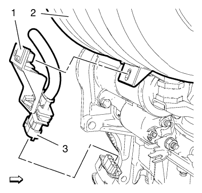
- Desemborne el mazo de cables de la sonda Lambda (3).
- Retire el soporte del mazo de cables (1) del colector de admisión (2).
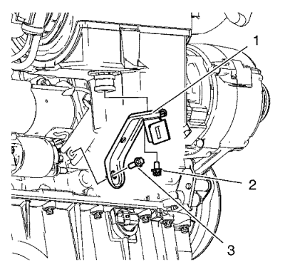
- Retire los 2 tornillos (2, 3) de anclaje del colector de admisión.
- Desmonte el anclaje del colector de admisión (1).
- Bajar el vehículo.

- Retire el tubo de ventilación del depósito de combustible (1) de la válvula solenoide de purga del depósito antiimpurezas de emisión de vapores (3). Consultar Servicio del adaptador de conexión rápida del collarín plástico .
- Cierre el tubo de ventilación del depósito de combustible (1) con los tapones de cierre EN-6015.
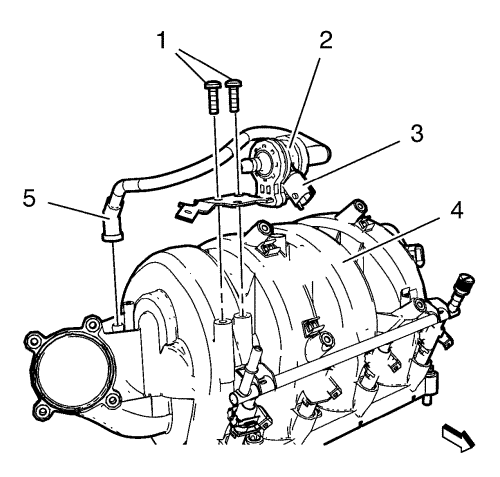
- Desconecte el enchufe del mazo de cables (3).
- Desconecte el tubo (5) que va de la válvula solenoide de purga del depósito antiimpurezas de emisión de vapores (2) al colector de admisión (4). Consultar Servicio del adaptador de conexión rápida del collarín plástico .
- Retire los 2 tornillos del soporte del depósito antiimpurezas de emisión de vapores (1)
- Desmonte la válvula solenoide de purga del depósito antiimpurezas de emisión de vapores (2) y el soporte de goma del colector de admisión (4).
- Cierre el tubo de ventilación del depósito de combustible con los tapones de cierre EN-6015.
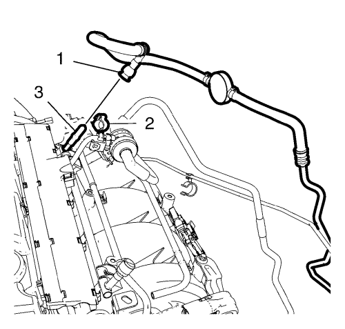
- Desenganche el tubo de alimentación de combustible (1) del clip del tubo de alimentación de combustible (2). Consultar Servicio del adaptador de conexión rápida del collarín plástico .
- Desacople la tubería de alimentación de combustible (1) del tubo de distribución de inyección de combustible (3).
- Cierre la tubería de alimentación de combustible (1) y el tubo de distribución de combustible de inyección de combustible multipuerto (3) con tapones de cierre CH-807.
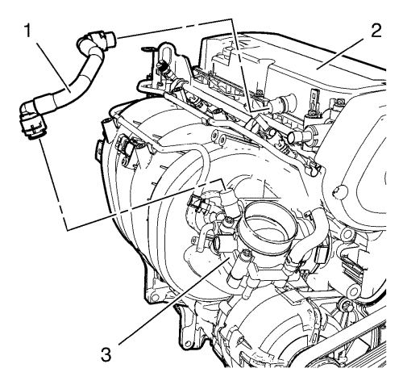
- Retire el tubo de ventilación positiva de la carcasa del cigüeñal (1) del cuerpo de la mariposa (3) y la tapa del árbol de levas (2). Consultar Servicio del adaptador de conexión rápida del collarín plástico .
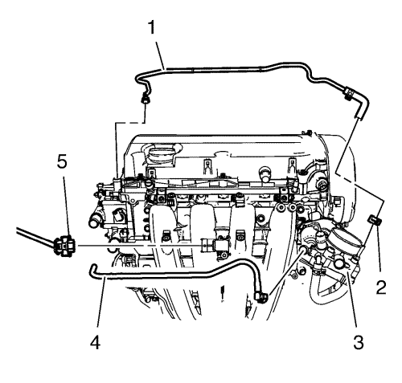
- Desconecte el enchufe del mazo de cables del sensor de presión absoluta del colector (5).
- Retire la abrazadera (2) y el tubo flexible de entrada del calefactor del cuerpo de la mariposa (1) del cuerpo de la mariposa (3). Consultar Servicio del adaptador de conexión rápida del collarín plástico .
- Desacople el tubo flexible de salida del calefactor del cuerpo de la mariposa (4) del cuerpo de la mariposa (3). Consultar Servicio del adaptador de conexión rápida del collarín plástico .
- Desmonte el mazo de cables del sistema de gestión del motor y el mazo de cables de los inyectores de combustible.
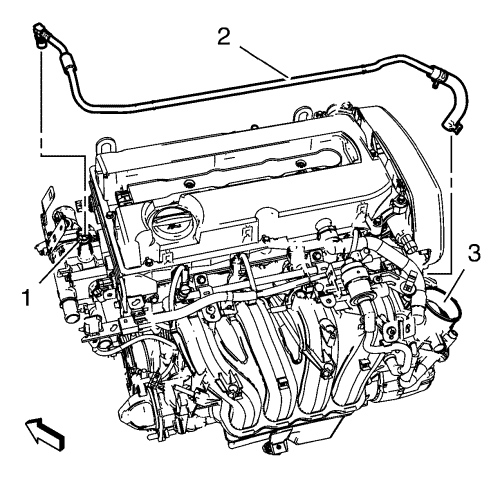
- Desacople el conector del tubo flexible de entrada del calefactor del cuerpo de la mariposa de la carcasa del termostato de refrigerante del motor (1). Consultar Servicio del adaptador de conexión rápida del collarín plástico .
- Desmonte el tubo flexible de entrada del calefactor del cuerpo de la mariposa (2).
- Desmonte el conjunto del cuerpo de la mariposa. Consultar
Sustitución del conjunto del cuerpo de la mariposa : 1.6L LDE, LXV, 1.8L 2H0 y LUW .
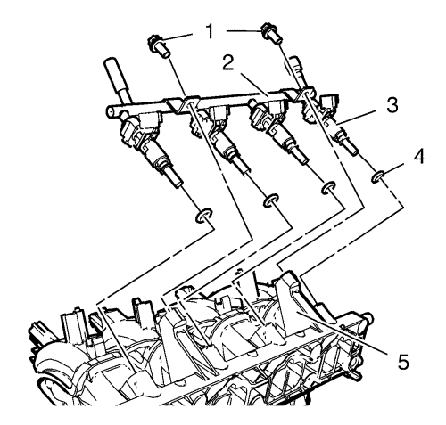
- Desmonte los 2 tornillos del tubo de distribución de inyección de combustible multipuerto (1).
- Extraiga el tubo de distribución de inyección de combustible multipuerto (2) y los inyectores de combustible (4) del colector de admisión (5).
- Desmonte las 4 juntas de los inyectores de combustible multipuerto (4).
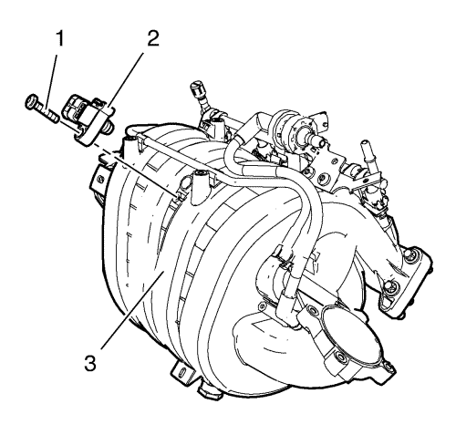
- Extraiga el tornillo del sensor de presión absoluta del colector (1).
- Desmonte el sensor de presión absoluta del colector (2) del colector de admisión (3).
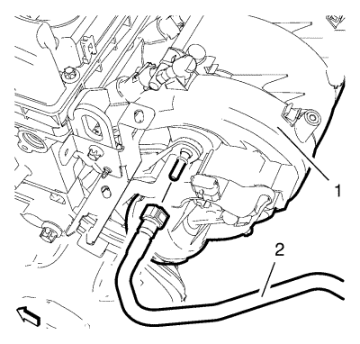
- Desacople el tubo de vacío del servofreno (2) del colector de admisión (1).
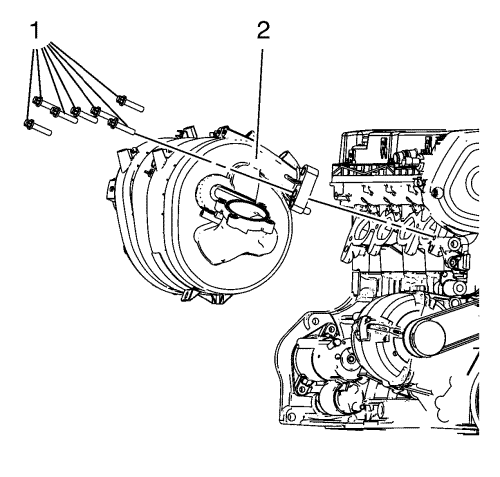
- Retire los 7 tornillos (1) del colector de admisión.
- Desmonte el colector de admisión (2).
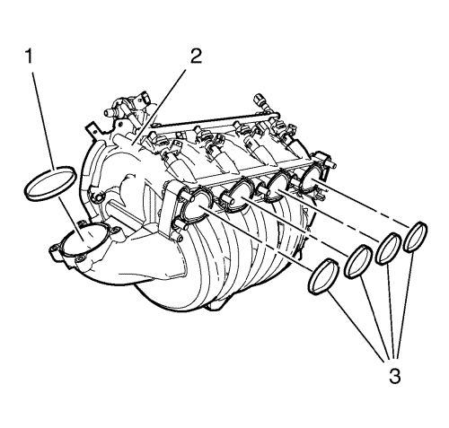
- Retire las juntas del colector de admisión (1, 3) del colector de admisión (2).
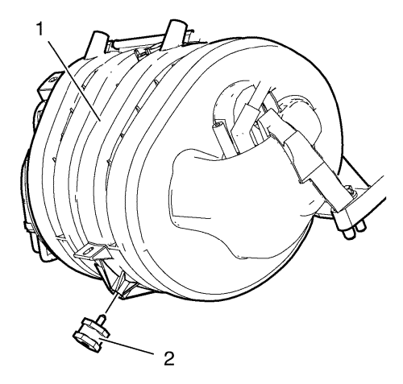
- Retire el soporte de goma (2) del colector de admisión (1).
Procedimiento de limpieza e inspección
Limpie e inspeccione el colector de admisión. Consultar
Limpieza y comprobación del colector de admisión : LDE, LED, LFJ, LXV, 2H0, LUW .
Procedimiento de montaje
- Limpie las superficies de sellado.
- Monte el soporte de goma (2) en el colector de admisión (1).
- Monte las juntas NUEVAS (1, 3) en el colector de admisión (2).
Precaución:Consulte Precaución con las fijaciones en la sección Prólogo.
- Monte el colector de admisión (2) y los 7 tornillos del colector de admisión (1), y apriételos a 20 N·m (15 lib. pie).
- Monte el sensor de presión absoluta del colector (2) en el colector de admisión (3).
- Monte el tornillo del sensor de presión absoluta del colector (1) y apriételo a 6 N·m (53 lib. pulg.).
- Monte las 4 juntas de los inyectores de combustible multipuerto (4).
- Monte el tubo de distribución de inyección de combustible multipuerto (2) y los inyectores de combustible (3) del colector de admisión (5).
- Monte los 2 tornillos del tubo de distribución de inyección de combustible multipuerto (1) y apriételos a 8 N·m (71 lib. pulg.).
- Acople el tubo de vacío del servofreno (2) al colector de admisión (1).
- Monte el conjunto del cuerpo de la mariposa. Consultar
Sustitución del conjunto del cuerpo de la mariposa : 1.6L LDE, LXV, 1.8L 2H0 y LUW .
- Monte el tubo flexible de entrada del calefactor del cuerpo de la mariposa (2).
- Meta, en la carcasa del termostato de refrigerante del motor (1), el tubo flexible de entrada del calefactor del cuerpo de la mariposa (2). Consultar Servicio del adaptador de conexión rápida del collarín plástico .
- Monte el tubo flexible de salida del calefactor del cuerpo de la mariposa (4) en el cuerpo de la mariposa (3). Consultar Servicio del adaptador de conexión rápida del collarín plástico .
- Monte el tubo flexible de entrada del calefactor del cuerpo de la mariposa (1) en el cuerpo de la mariposa (3) y monte la abrazadera (2).
- Conecte el enchufe del mazo de cables del sensor de presión absoluta del colector (5).
- Monte el mazo de cables del sistema de gestión del motor y el mazo de cables de los inyectores de combustible.
- Monte el tubo de ventilación positiva de la carcasa del cigüeñal (1) en el cuerpo de la mariposa (3) y en la tapa del árbol de levas (2). Consultar Servicio del adaptador de conexión rápida del collarín plástico .
- Retire los tapones de cierre CH-807 de la tubería de alimentación de combustible (1) y del tubo de distribución de inyección de combustible multipuerto (3).
- Monte el tubo de alimentación de combustible (1) en el tubo de distribución de inyección de combustible multipuerto (3). Consultar Servicio del adaptador de conexión rápida del collarín plástico .
- Fije la tubería de alimentación de combustible (1) con el clip de la tubería de alimentación de combustible (2).
- Monte la válvula solenoide de purga del depósito antiimpurezas de emisión de vapores (2) y el soporte de goma en el colector de admisión (4).
- Monte los 2 tornillos del soporte del depósito antiimpurezas de emisión de vapores (1) y apriételos a 8 N·m (71 lib. pulg.).
- Acople el tubo (5) a la válvula solenoide de purga del depósito antiimpurezas de emisión de vapores (2) y al colector de admisión (4). Consultar Servicio del adaptador de conexión rápida del collarín plástico .
- Conecte el enchufe del mazo de cables (3).
- Retire el tapón de cierre EN-6015 del tubo de ventilación del depósito de combustible (1).
- Monte el tubo de ventilación del depósito de combustible (1) en la válvula solenoide de purga del depósito antiimpurezas de emisión de vapores (3). Consultar Servicio del adaptador de conexión rápida del collarín plástico .
- Elevar el vehículo
- Monte el anclaje del colector de admisión (1).
- Monte los 2 tornillos del anclaje del colector de admisión (2, 3) y apriételos a 8 N·m (71 lib. pulg.).
- Monte el soporte del mazo de cables (1) en el colector de admisión (2).
- Emborne el mazo de cables de la sonda Lambda (3).
- Bajar el vehículo.
- Monte el conducto de salida del filtro de aire. Consultar Sustitución del conducto de salida del filtro de aire .
- Monte la cubierta del orificio del panel de extensión superior del salpicadero. Consultar Sustitución de la cubierta de apertura del panel de expansión superior del salpicadero .
- Conecte el cable negativo de la batería. Consultar Desconexión y conexión del cable negativo de la batería .
- Cierre el capó.
| © Copyright Chevrolet. All rights reserved |